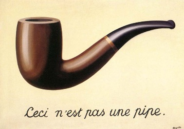

The Treachery of Images
René Magritte · 1929 · Oil on canvas · Los Angeles County Museum of Art
In copyright. Look and learn: shown for study, not for download.
The canvas is about 60 by 81 centimetres. On 15 December 1929, the year it was painted, André Breton and Paul Éluard referred to it in the magazine La Révolution surréaliste, mocking a line by the poet Paul Valéry by writing that poetry is a pipe. Magritte published a text of his own on words and images in the same issue. He used the pipe and its sentence again in other works, among them Les Deux Mystères.